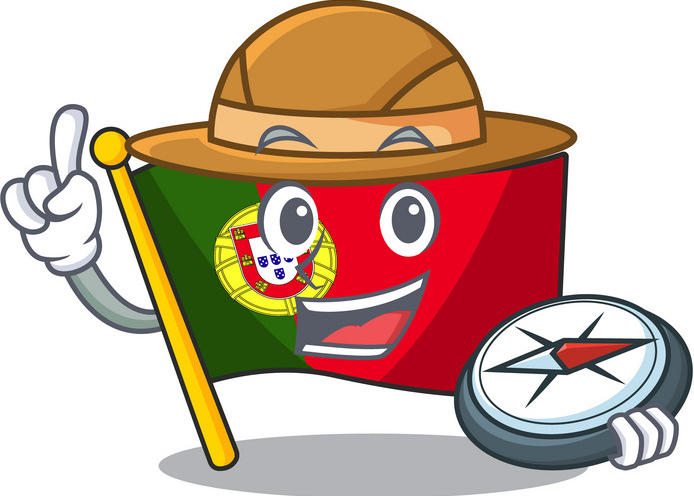

Use the left and right arrow to control the portuguese explorer!
Collect "Port wine" and "Pastéis de Belém" for a higher score...
Stats
Score: 0
Lives: 3
Use the left and right arrow to control the portuguese explorer!
Collect "Port wine" and "Pastéis de Belém" for a higher score...
Score: 0
Lives: 3